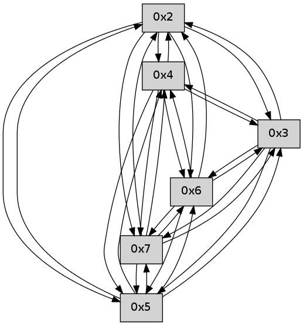

>> << IDX [start] -25 -5 +0 +5 +25 +100 [65.4621651173]
 Previous packets
----------------------------------------------------------------------
60.367131 beacon01(faad) #0 coord=01,02,03,04,05,06,07 cycle=496.0ms assoc
-- color-indic=0 64 2f 41
60.377101 beacon02(faad) #0 coord=01,02,03,04,05,06,07 cycle=496.0ms assoc 64 78 84
60.387100 beacon03(faad) #0 coord=01,02,03,04,05,06,07 cycle=496.0ms assoc 64 d4 26
60.397101 beacon04(faad) #0 coord=01,02,03,04,05,06,07 cycle=496.0ms assoc 64 a3 53
60.407101 beacon05(faad) #0 coord=01,02,03,04,05,06,07 cycle=496.0ms assoc 64 0f f1
60.417101 beacon06(faad) #0 coord=01,02,03,04,05,06,07 cycle=496.0ms assoc 64 ea 1e
60.427100 beacon07(faad) #0 coord=01,02,03,04,05,06,07 cycle=496.0ms assoc 64 46 bc
60.438783 [Hello(6): seq=38 sym=2,3,5,4,7 sysInfo= stat=2:2,0,0,0/3:3,0,0,0/5:3,0,0,0/4:0,0,0,0/7:4,0,0,0]
60.442132 [Hello(7): seq=38 sym=2,3,5,6,4 sysInfo= stat=2:5,0,0,0/3:1,0,0,0/5:3,0,0,0/6:12,0,0,0/4:0,0,0,0]
----------------------------------------------------------------------
60.933245 beacon01(faad) #0 coord=01,02,03,04,05,06,07 cycle=496.0ms assoc
-- color-indic=0 64 c4 01
60.943214 beacon02(faad) #0 coord=01,02,03,04,05,06,07 cycle=496.0ms assoc 64 93 c4
60.953215 beacon03(faad) #0 coord=01,02,03,04,05,06,07 cycle=496.0ms assoc 64 3f 66
60.963214 beacon04(faad) #0 coord=01,02,03,04,05,06,07 cycle=496.0ms assoc 64 48 13
60.973215 beacon05(faad) #0 coord=01,02,03,04,05,06,07 cycle=496.0ms assoc 64 e4 b1
60.983214 beacon06(faad) #0 coord=01,02,03,04,05,06,07 cycle=496.0ms assoc 64 01 5e
60.993216 beacon07(faad) #0 coord=01,02,03,04,05,06,07 cycle=496.0ms assoc 64 ad fc
61.004930 [Hello(5): seq=39 sym=7,6,4,2,3 sym= sysInfo= stat=]
61.007617 [Hello(2): seq=39 sym=4,5,7,6,3 sysInfo= stat=4:5,0,0,0/5:15,0,0,0/7:6,0,0,0/6:2,0,0,0/3:0,0,0,0]
61.009865 [Hello(3): seq=39 sym=5,7,6,4,2 sysInfo= stat=5:15,0,0,0/7:2,0,0,0/6:4,0,0,0/4:1,0,0,0/2:1,0,0,0]
61.016078 [Hello(4): seq=39 sym=5,7,6,2,3 sysInfo= stat=5:14,0,0,0/7:2,0,0,0/6:6,0,0,0/2:14,0,0,0/3:14,0,0,0]
----------------------------------------------------------------------
61.499359 beacon01(faad) #0 coord=01,02,03,04,05,06,07 cycle=496.0ms assoc
-- color-indic=0 64 ff 37
61.509328 beacon02(faad) #0 coord=01,02,03,04,05,06,07 cycle=496.0ms assoc 64 a8 f2
61.519328 beacon03(faad) #0 coord=01,02,03,04,05,06,07 cycle=496.0ms assoc 64 04 50
61.529329 beacon04(faad) #0 coord=01,02,03,04,05,06,07 cycle=496.0ms assoc 64 73 25
61.539328 beacon05(faad) #0 coord=01,02,03,04,05,06,07 cycle=496.0ms assoc 64 df 87
61.549329 beacon06(faad) #0 coord=01,02,03,04,05,06,07 cycle=496.0ms assoc 64 3a 68
61.559328 beacon07(faad) #0 coord=01,02,03,04,05,06,07 cycle=496.0ms assoc 64 96 ca
61.570706 [Hello(7): seq=39 sym=2,3,5,6,4 sysInfo= stat=2:6,0,0,0/3:2,0,0,0/5:4,0,0,0/6:12,0,0,0/4:1,0,0,0]
61.575021 [Hello(6): seq=39 sym=2,3,5,4,7 sysInfo= stat=2:3,0,0,0/3:4,0,0,0/5:4,0,0,0/4:1,0,0,0/7:5,0,0,0]
----------------------------------------------------------------------
62.065474 beacon01(faad) #0 coord=01,02,03,04,05,06,07 cycle=496.0ms assoc
-- color-indic=0 64 b2 6d
62.075442 beacon02(faad) #0 coord=01,02,03,04,05,06,07 cycle=496.0ms assoc 64 e5 a8
62.085442 beacon03(faad) #0 coord=01,02,03,04,05,06,07 cycle=496.0ms assoc 64 49 0a
62.095443 beacon04(faad) #0 coord=01,02,03,04,05,06,07 cycle=496.0ms assoc 64 3e 7f
62.105443 beacon05(faad) #0 coord=01,02,03,04,05,06,07 cycle=496.0ms assoc 64 92 dd
62.115443 beacon06(faad) #0 coord=01,02,03,04,05,06,07 cycle=496.0ms assoc 64 77 32
62.125443 beacon07(faad) #0 coord=01,02,03,04,05,06,07 cycle=496.0ms assoc 64 db 90
62.140460 [Hello(3): seq=40 sym=5,7,6,4,2 sysInfo= stat=5:15,0,0,0/7:3,0,0,0/6:5,0,0,0/4:2,0,0,0/2:1,0,0,0]
62.143512 PARSE ERROR************************
Traceback (most recent call last):
File "PacketAnalysis.py", line 167, in showOperaPacket
structPacket = OperaPacketParse.parsePacket(rawPacket)
File "../../pkg-python/HipSens/Core/OperaPacketParse.py", line 461, in parsePacket
return parseHelloMessage(data)
File "../../pkg-python/HipSens/Core/OperaPacketParse.py", line 109, in parseHelloMessage
sysInfo,stability,colorInfo = struct.unpack("!HBB", linkList[0:4])
error: unpack requires a string argument of length 4
48 24 04 00 00 28 00 02 02 0a 05 00 07 00 06 00 02 00 03 00 53 04 00 00 00 00 4c 0a 00 0e 00 03 00 07 00 0e 00 0e 53 f4
----------------------------------------------------------------------
62.631587 beacon01(faad) #0 coord=01,02,03,04,05,06,07 cycle=496.0ms assoc
-- color-indic=0 64 89 5b
62.641555 beacon02(faad) #0 coord=01,02,03,04,05,06,07 cycle=496.0ms assoc 64 de 9e
62.651556 beacon03(faad) #0 coord=01,02,03,04,05,06,07 cycle=496.0ms assoc 64 72 3c
62.661559 beacon04(faad) #0 coord=01,02,03,04,05,06,07 cycle=496.0ms assoc 64 05 49
62.671556 beacon05(faad) #0 coord=01,02,03,04,05,06,07 cycle=496.0ms assoc 64 a9 eb
62.681557 beacon06(faad) #0 coord=01,02,03,04,05,06,07 cycle=496.0ms assoc 64 4c 04
62.691556 beacon07(faad) #0 coord=01,02,03,04,05,06,07 cycle=496.0ms assoc 64 e0 a6
62.703239 [Hello(6): seq=40 sym=2,3,5,4,7 sysInfo= stat=2:4,0,0,0/3:5,0,0,0/5:4,0,0,0/4:2,0,0,0/7:5,0,0,0]
62.705637 [Hello(7): seq=40 sym=2,3,5,6,4 sysInfo= stat=2:7,0,0,0/3:3,0,0,0/5:4,0,0,0/6:13,0,0,0/4:2,0,0,0]
----------------------------------------------------------------------
63.197703 beacon01(faad) #0 coord=01,02,03,04,05,06,07 cycle=496.0ms assoc
-- color-indic=0 64 28 d9
63.207671 beacon02(faad) #0 coord=01,02,03,04,05,06,07 cycle=496.0ms assoc 64 7f 1c
63.217672 beacon03(faad) #0 coord=01,02,03,04,05,06,07 cycle=496.0ms assoc 64 d3 be
63.227672 beacon04(faad) #0 coord=01,02,03,04,05,06,07 cycle=496.0ms assoc 64 a4 cb
63.237674 beacon05(faad) #0 coord=01,02,03,04,05,06,07 cycle=496.0ms assoc 64 08 69
63.247672 beacon06(faad) #0 coord=01,02,03,04,05,06,07 cycle=496.0ms assoc 64 ed 86
63.257673 beacon07(faad) #0 coord=01,02,03,04,05,06,07 cycle=496.0ms assoc 64 41 24
63.270979 [Hello(4): seq=41 sym=5,7,6,2,3 sysInfo= stat=5:14,0,0,0/7:4,0,0,0/6:8,0,0,0/2:14,0,0,0/3:14,0,0,0]
----------------------------------------------------------------------
63.763818 beacon01(faad) #0 coord=01,02,03,04,05,06,07 cycle=496.0ms assoc
-- color-indic=0 64 13 ef
63.773788 beacon02(faad) #0 coord=01,02,03,04,05,06,07 cycle=496.0ms assoc 64 44 2a
63.783787 beacon03(faad) #0 coord=01,02,03,04,05,06,07 cycle=496.0ms assoc 64 e8 88
63.793788 beacon04(faad) #0 coord=01,02,03,04,05,06,07 cycle=496.0ms assoc 64 9f fd
63.803789 beacon05(faad) #0 coord=01,02,03,04,05,06,07 cycle=496.0ms assoc 64 33 5f
63.813788 beacon06(faad) #0 coord=01,02,03,04,05,06,07 cycle=496.0ms assoc 64 d6 b0
63.823788 beacon07(faad) #0 coord=01,02,03,04,05,06,07 cycle=496.0ms assoc 64 7a 12
63.836432 [Hello(7): seq=41 sym=2,3,5,6,4 sysInfo= stat=2:7,0,0,0/3:3,0,0,0/5:4,0,0,0/6:13,0,0,0/4:3,0,0,0]
----------------------------------------------------------------------
64.329932 beacon01(faad) #0 coord=01,02,03,04,05,06,07 cycle=496.0ms assoc
-- color-indic=0 64 5e b5
64.339900 beacon02(faad) #0 coord=01,02,03,04,05,06,07 cycle=496.0ms assoc 64 09 70
64.349900 beacon03(faad) #0 coord=01,02,03,04,05,06,07 cycle=496.0ms assoc 64 a5 d2
64.359902 beacon04(faad) #0 coord=01,02,03,04,05,06,07 cycle=496.0ms assoc 64 d2 a7
64.369902 beacon05(faad) #0 coord=01,02,03,04,05,06,07 cycle=496.0ms assoc 64 7e 05
64.379902 beacon06(faad) #0 coord=01,02,03,04,05,06,07 cycle=496.0ms assoc 64 9b ea
64.389904 beacon07(faad) #0 coord=01,02,03,04,05,06,07 cycle=496.0ms assoc 64 37 48
64.401284 [Hello(4): seq=42 sym=5,7,6,2,3 sysInfo= stat=5:14,0,0,0/7:4,0,0,0/6:9,0,0,0/2:14,0,0,0/3:14,0,0,0]
64.403205 [Hello(3): seq=42 sym=5,7,6,4,2 sysInfo= stat=5:15,0,0,0/7:4,0,0,0/6:7,0,0,0/4:4,0,0,0/2:1,0,0,0]
64.407798 [Hello(2): seq=42 sym=4,5,7,6,3 sysInfo= stat=4:8,0,0,0/5:15,0,0,0/7:9,0,0,0/6:4,0,0,0/3:2,0,0,0]
----------------------------------------------------------------------
64.896050 beacon01(faad) #0 coord=01,02,03,04,05,06,07 cycle=496.0ms assoc
-- color-indic=0 64 65 83
64.906019 beacon02(faad) #0 coord=01,02,03,04,05,06,07 cycle=496.0ms assoc 64 32 46
64.916020 beacon03(faad) #0 coord=01,02,03,04,05,06,07 cycle=496.0ms assoc 64 9e e4
64.926020 beacon04(faad) #0 coord=01,02,03,04,05,06,07 cycle=496.0ms assoc 64 e9 91
64.936018 beacon05(faad) #0 coord=01,02,03,04,05,06,07 cycle=496.0ms assoc 64 45 33
64.946020 beacon06(faad) #0 coord=01,02,03,04,05,06,07 cycle=496.0ms assoc 64 a0 dc
64.956019 beacon07(faad) #0 coord=01,02,03,04,05,06,07 cycle=496.0ms assoc 64 0c 7e
64.968044 [Hello(6): seq=42 sym=2,3,5,4,7 sysInfo= stat=2:5,0,0,0/3:5,0,0,0/5:4,0,0,0/4:4,0,0,0/7:6,0,0,0]
64.970750 [Hello(7): seq=42 sym=2,3,5,6,4 sysInfo= stat=2:8,0,0,0/3:4,0,0,0/5:4,0,0,0/6:13,0,0,0/4:4,0,0,0]